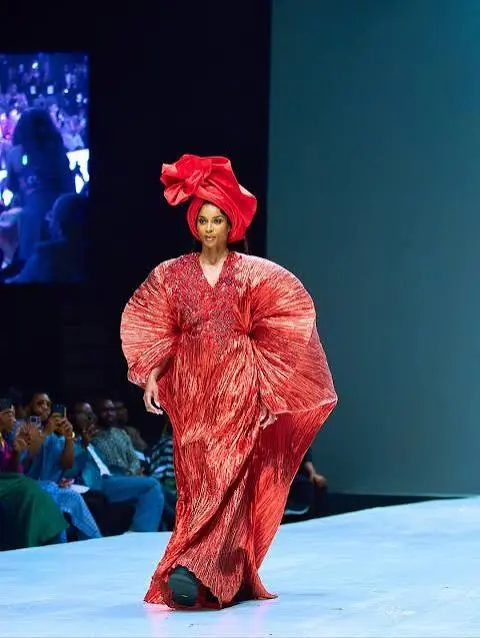
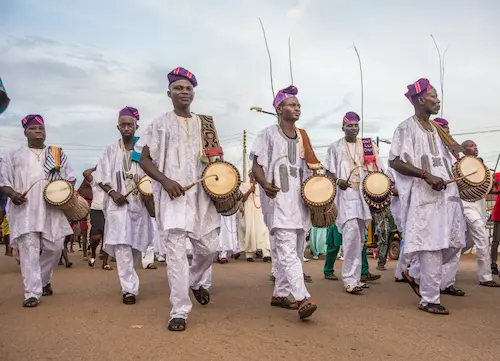
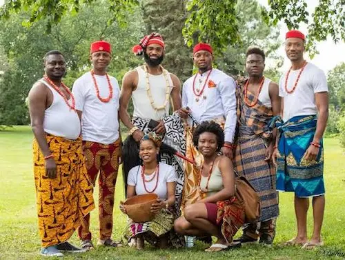
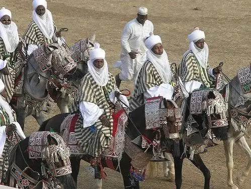
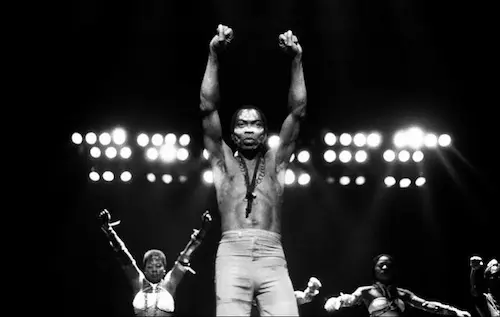
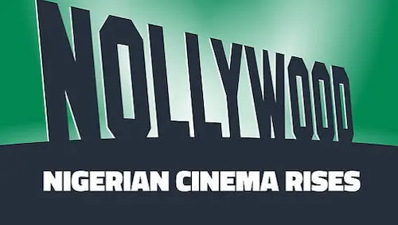
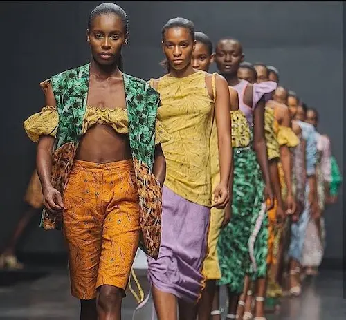
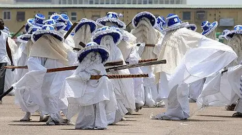
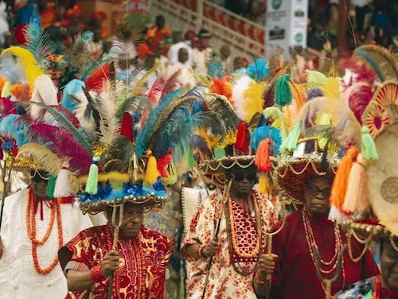
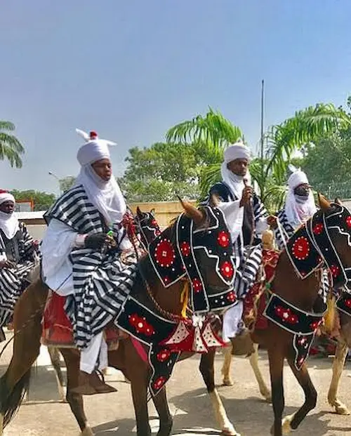

Discover Nigeria's Exciting culture

Regions in Nigeria
Nigeria is divided into six geopolitical zones that reflects diverse landscapes,ethnic groups,and is rich in culture and traditions. Here are the three know ethnic groups in Nigeria:

South-West Region

South-West Region

Northern Region
What's Buzzing
Nigeria is buzzing with major pop culture moments,intense sports, and significant national conversations and milestones.

Pop Culture
An undisputed heartbeat of modern global music, with artists who sell out massively internationally.

Nollywood Film Industry
The film industry is famously known as the 2nd largest film industry by volume. With fast shooting, editing and releases.

Fashion Capital
Lagos Fashion Week famous for its showcase of fabulous African designs to local and global
Festival and Lifestyle
Nigeria festivals are masive tourist attractions, offering an unforgettable explosion of colors,ancient royalty and high energy street parties.

The Eyo festival
Known as a regal,white clad masqurade, which is traditionally held when a king or a chief pass away.

The Ofala festival
Known as the ultimate celebration of royalty and renewal for the king of Onitsha and other monarchs of Igboland.

The Durbar festival
Know for it's jaw dropping display of royal equestrian warfare and islam history held at the end of Ramadan